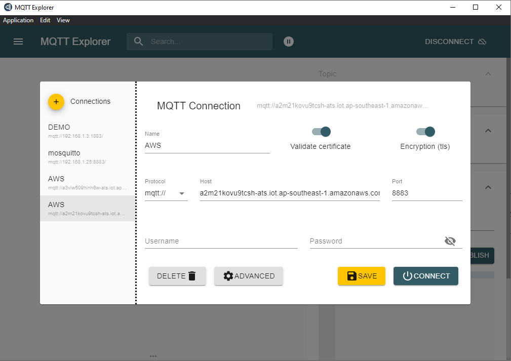
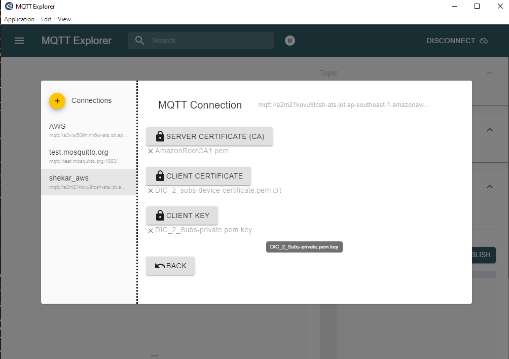
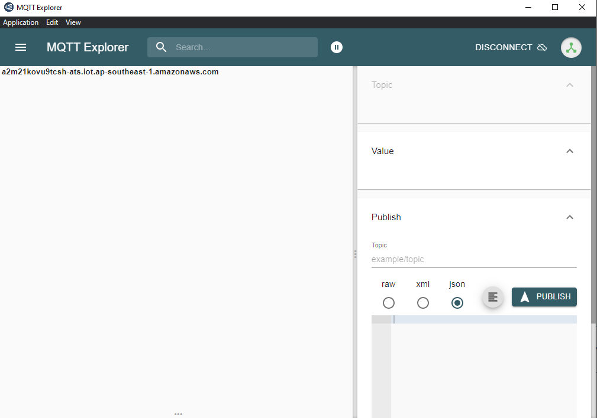

Set Up MQTT Explorer
Download and install the MQTT Explorer from https://mqtt-explorer.com/
Setting up MQTT Explorer for testing.

Connecting to MQTT Server
Connecting to AWS
Host : Your Host name (examples: a2m21kovu9tcsh-ats.iot.ap-southeast-1.amazonaws.com)
Port : 8883
Make sure you enable
Validate Certificate and EncryptionClick on the
Advanced Settings

Add topics as shown (#, light/*, test_publish )
MQTT Client ID depends on the certificate set that you will use.
Add the Certificate, following step 7 in AWS installation

Once the above steps are done, try connecting to AWS.

Connecting to Mosquitto Connection
Host : Your Mosquitto ip address
Port : 8883
Make sure you enable Validate Certificate and Encryption
Click on the
Advanced Settings
Add topics as shown (#, light/*, test_publish )
MQTT Client ID depends on the certificate set that you will use.
Add the Certificate, following step 5 in openssl certificate create